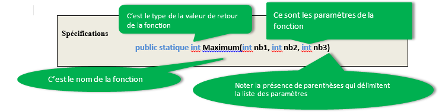

Guide C#
L'objectif de ce chapitre est de découvrir les notions fondamentales liées au développement. En particulier au developpement en langage C#
Oubliez terminator ! La machine est un ensemble de composants électroniques.

La machine a des caractéristiques peu pratiques :
- elle est muette : pour connaitre une information, elle doit poser une question, le plus souvent à l'écran,
- elle est sourde : pour obtenir une information, elle doit analyser les données saisie, le plus souvent au clavier,
- elle est limitée : elle ne peut que faire des calcul, à partir des informations saisie et elle doit pouvoir les stocker,
- elle est muette : une fois ses calculs faits, elle devra les restituer, le plus souvent à l'écran.
Programmer, c ’est quoi ?
- Utiliser un langage de programmation,
- Donner des ordres clairs à l ’ordinateur,
- Etre capable de structurer ces ordres.
Programmer c'est répondre à un besoin !
- Analyse des besoins et de l ’application à mettre en place,
- Développement de l ’application,
- Mise en œuvre des éventuelles bases de données,
- Programmation,
- Déploiement et maintenance.
Avant de programmer...
Donner des ordres à un ordinateur, c ’est :
- Utiliser un vocabulaire qu ’il comprend,
- Respecter un certain ordre afin d ’aboutir au résultat souhaité.
L'art du technicien, c'est chercher la simplicité. Plus c'est simple, plus c'est mignon.
La simplicité s'exerce à deux niveaux :
- le niveau technique,
- le niveau de temps
Que ce soit dans un cadre professionnel, scolaire ou personnelle, les journées ne font que 24 heures, et personne ne passe son temps à faire toujours et tout le temps la même chose
Pour appréhender un problème, il faut le faire méthodiquement,
partir du simple pour aller au plus compliqué.
En informatique et souvent dans d'autres domaines, un
problème compliqué est une somme de problèmes simple.
Le tout est de faire une bonne analyse, c'est ce à quoi doit
aboutir un débutant, avant de foncer tête bêche.
L'automatisation
Il ne faut pas faire plus de 3 fois la même chose.
Si vous voyez quelque chose qui se répète, votre premier réflexe doit être de chercher à factoriser le code, parce que moins de code, c'est moins de bugs, et c'est un programme plus facile à comprendre.
Pour ne pas se répéter il faut automatiser les processus.
Ceci est vrai :
- pour le code,
- pour des applications, comme votre ide, que ce soit visual studio, sublime text ...
il est nécessaire d’identifier :
- les points de répétition,
- les points à faible valeur ajouté, qui peuvent êtres automatisés.
Documentez vous
Personne ne connait tout sur tout, même les professionnels les plus aguerris. Cela ne ce voit qu'à la télévision !
Voilà pourquoi, il faut toujours avoir une documentation avec soi. Peut importe qu'elle soit technique, de cours ou de notes.
Commentez votre code
Le code n'est pas quelque chose de fixe dans le temps, la technicité du programmeur évolue, ainsi que son analyse des problèmes. Ceci va donc influer sur sa façon de coder.
Un code se butine, c'est à dire que son programmeur le fait évoluer, il le modifie, qu'il soit ou non débutant.
De plus, le code n'est pas forcément destiné à une seule personne, la programmation est le plus souvent un travail d'équipe, et le code doit être "lisible" pour toute l'équipe.
Commenter son code ce n'est pas commenter un boucle ou un si. C'est avant tout donnez les exemples qui illustrent les intentions du programmeur.
Tester son code
Le test simple consiste à prévoir tous les cas possibles auxquels sera soumis le code. C'est d'ailleurs ces cas qui servirons le plus souvent de commentaire.
Lorsque les programmes sont plus long et plus complexes, le programmeur aura recours aux tests automatisés. Ils limiteront les erreurs.
La qualité est quelque chose de subjectif. Elle varie en fonction
de la perosnne concernée.
Elle sera différente selon que l'on soit :
- un débutant,
- un étudiant,
- un professeur,
- un développeur,
- un client.
Il faut se donner des bonnes pratiques pour soi et ses collègues.
Les bonnes pratiques sont souvent liées à une technologie ou un métier.
L'objectif de ce chapitre est de découvrir les bases du langage C#.
C# est une langage dit de "haut niveau". Il se positionne entre le C++, réputé complexe et Visual Basic.
Le C# est souple, c'est-a-dire qu'il peut être exécuté sur la machine sur laquelle il se trouve ou bien transmis par l'intermédiaire du web pour s'exécuter sur un ordinateur distant.
Le C# est aussi puissant que le C++, tant par la richesse de son langage que par sa vitesse d'exécution.
Le C# est facile a utiliser, les commandes générant des erreurs en C++ ont été modifiées pour les rendre plus sures.
Le C# est multi cibles, les programmes peuvent être définis pour s'exécuter en mode console, graphique, sur Pc, sur Pocket-Pc et même sur Linux grâce à mono et a Microsoft qui a fournit les sources de .net ( Projet Rotor ).
C# est prêt pour Internet, c'est le pivot de la nouvelle stratégie Internet de Microsoft, nommée .NET.
C# est sûr, comme tout langage destiné à une utilisation sur Internet il doit contenir les principes garantissant l'intégrité de la plateforme hôte.
C# est véritablement orienté objet.
Le code C# est écrit dans des fichiers source portant l'extension
.cs. Dans le cas d'un programme web celle-ci sera .asp
Il est fortement conseillé d'adopter le jeu de caractères ANSI non étendu (sans les caractères français). Tous les fichiers source doivent être encodés avec ce jeu de caractères,seules les parties de texte peuvent contenir des caractères français, voici un exemple ci-dessous.
using System;
namespace demonstration
{
class HelloWorld {
static void Main() {
Console.WriteLine ("Hello, World");
}
}
Voici les explications du code :
Using System;
Au début de chaque fichier de programme il faut mettre la directive using pour
spécifier au compilateur une liste de chemins de recherche implicites.
Par exemple, quand le compilateur rencontre la méthode
"Console.WriteLine ("Hello, World");",il s'aperçoit que son chemin n'est pas
défini explicitement. Il balaie alors les espaces de noms spécifiés dans les
using puis, une fois la méthode dénichée dans l'espace de nom System, il compile
le code.
namespace demonstration
Cette ligne facultative défini un espace de nom qui va contenir les classes qui sont entre accolades dans notre exemple la classe bonjour. L'explication est la même dans le principe que celle donnée au dessus, je vous laisse vous y reporter.
public class HelloWorld
Une application C# est une collection de classes, une classe étant un ensemble de données et de méthodes. Une méthode est un ensemble d'instructions appliquant un traitement aux données de la classe, retournant ou non un résultat logique ou typé (valeur numérique, chaîne de caractères, référence d'objet, etc.. . .)
C'est le mot clé class qui introduit la déclaration de la classe, suivi du nom de
la classe, d'une accolade ouvrante et d'une accolade fermante. Votre code sera
placé entre les deux accolades.
static void Main()
Cette méthode est la méthode principale ( main in english ) de votre programme bonjour, c’est ici que vous placerez les actions a faire exécuter a C#.
Le mot-clef public signifie que la méthode est accessible au monde extérieur. Le
mot clé static indique au compilateur que la méthode Main est globale et que,
par conséquent, il est inutile d'instancier la classe pour pouvoir appeler la
méthode. Comme elle est statique, le compilateur prend son adresse comme point
d'entrée. De cette façon, l'environnement .NET sait par où commencer l'exécution
de l'application.
Console.WriteLine("HelloWorld");
Pour l'instant intéressons-nous à WriteLine( ), qui veut dire "écris ce que je te
donne sur une ligne de la console". C'est magnifique, vous savez faire écrire
une phrase ! Ne vous inquiétez pas après l'écriture viendront les calculs !
Les débutants ont tendance à copier le code avant de fermer les accolades, ce qui induit des recherches inutile en déboguage
Bonne pratique : avant de commencer à coder, soyez sûr que toutes les accolades existe de façon à générer un programme vide sans erreurs.
La partie de programme située entre deux accolades, une ouvrante et une fermante, est appelée bloc. Je conseille de prendre l'habitude de faire une tabulation après le retour à la ligne qui suit l'accolade. Puis retirer cette tabulation après l'accolade fermante du bloc.
{
Tabulation
Tout le code est frappé à cette hauteur
}
Retrait de la tabulation
Tout le code est frappé à cette hauteur
Cette méthode permet de contrôler la fermeture des accolades et de leurs correspondances.
L'affichage de texte s'effectue grâce à la commande Console.Write().
Console.WriteLine ("Hello, World");
Il existe en fait 2 méthodes d'affichage :
Console.Write(): affiche du texte et reste sur la même ligne,Console.WriteLine(): affiche du texte et fait un saut de ligne
Les commentaires doivent permettre à quelqu'un, de pouvoir lire et comprendre ce qui se passe. Les commentaires sont indispensables à tout bon programme.
Il y a deux façons de placer des commentaires :
- soit en utilisant
/*Commentaire*/, qui permet aussi un commentaire sur plusieurs lignes, - soit en utilisant
//. Le reste de la ligne est un commentaire où le commentaire se termine à la fin de la ligne.
Microsoft à introduit la génération automatique de documentation basée sur le
XML. Pour l'obtenir il suffit de saisir /// devant chaque
déclaration de méthode
On obtient le code suivant :
/// <summary>
/// Commentaire...
/// <summary>
Revenons à notre exemple. Le code n'est pas, en totalité, positionné à droite. A chaque nouveau bloc le code est décalé vers la droite. C'est ce qu'on appelle l'indentation. Elle existe dans tous les langages, c'est un bonne pratique qui rend le code plus lisible.
using System;
namespace demonstration
{
class HelloWorld {
static void Main() {
Console.WriteLine ("Hello, World");
}
}
Note : si avec des IDE comme Visual Studio l'indentation est souvent automatique, préférez les tabulations à des espaces.
Si vous souhaitez couper une expression les bonnes pratiques sont les suivantes :
- faire un saut après une virgule,
- faire un saut après un opérateur(un + par exemple)
- aligner le début de la nouvelle ligne au même niveau que la précédent.
Exemple :
longMethodCall(expr1, expr2,
expr3, expr4, expr5);
Mauvais saut
var = a * b / (c - g +
f) + 4 * z;
Meilleure méthode
var = a * b / (c - g + f) +
4 * z;
La notation hongroise
- On ajoute un préfixe à chaque variable pour indiquer son type.
- Exemple :
btnRetourpour bouton Retour - Toutefois les préfixes ne sont pas standardisés et on doit en inventer pour les nouveaux types.
- Puisque C# est un langage fortement typé et que la hiérarchie de classes est très stricte on ne suggère pas d’utiliser cette notation.
La casse Pascal
- La première lettre est en majuscule.
- On sépare les mots en mettant leur première lettre en majuscule.
- Exemple :
AfficherCustomer - Vous remarquerez que les espaces de noms et les classes de bases du Framework respectent cette casse.
La casse Camel
- La première lettre est en minuscule.
- On sépare les mots en mettant leur première lettre en majuscule.
- Exemple :
testCompteur
La casse Majuscule
- Toutes les lettres sont en majuscule pour les constante d'une ou deux lettres
- Exemple :
PI - Si le nom est trop long, utilisez la casse Pascal
Note : Il est fortement déconseillé de séparer les mots par des
traits de soulignement (underscore) : Afficher_Customer est donc
déconseillé.
Nommage des noms
| Espaces de noms | On suggère d’utiliser le nom de la compagnie ou du produit en notation Pascal. |
|---|---|
| Variables | On utilise des noms en notation Camel. |
| Classes | On utilise un nom qui décrit les objets en notation Pascal. |
| Méthodes | On utilise un verbe qui décrit exactement ce que fait la méthode en notation Pascal. |
| Paramètres | On utilise des noms significatifs en notation Pascal. |
| Interfaces | On utilise des noms en notation Pascal précédés d’un I majuscule. |
| Membres | On utilise des noms en notation Camel. |
L'objectif de ce chapitre est de savoir utiliser les structures de bases de la programmation avec le langage C#.
Pour faciliter la compréhension du langage nous utiliserons le mode console.
Une variable joue en C# le même rôle que dans tout autre langage : stocker une information.
Vous pouvez vous représenter une variable comme étant une boîte dans laquelle on met quelque chose, c'est-à-dire qu’on écrit quelque chose, ou dont on « apprend » quelque chose, c'est-à-dire qu’on lit ce quelque chose
Une variable ne peut contenir qu’une seule chose à la fois. Si vous mettez une seconde donnée dans une variable, la précédente est effacée.
Le nom d’une variable est appelé identificateur.
Les types de variables
Les types ont souvent une assez grande importance dans un programme : ils permettent d'éviter un certain nombre de bugs, en vérifiant qu'on manipule toujours les données de manière correcte.
| Catégorie | Classe | Description | Version C# | Exemple |
|---|---|---|---|---|
| Entier | Byte | Entier non signé de 8-bit | byte | 255 |
| Int16 | Entier signé de 16-bit | short | -32768 | |
| Int32 | Entier signé de 32-bit | int | -2147483648 | |
| Int64 | Entier signé de 64-bit | long | -9 223 372 036 854 775 808 | |
| Nombre flottants | Single | Nombre flottant avec une précision de 32-bit | float | +/- 1.5 x 10 exp -45 |
| Double | Nombre flottant avec une précision de 64-bit | double | +/- 1.7 X 103 exp 308 | |
| Logique | Boolean | Valeur booléenne (true ou false). | bool | true |
| Autre | Char | Caractère Unicode (16-bit) | char | 'a' |
| Decimal | Valeur décimale sur 128-bit | decimal | l.0 x 10 exp -28 à 7.9 x 10 exp 28 | |
| IntPtr | Entier signé dont la taille dépend de la plateforme cible (32-bit ou 64-bit) | IntPtr | ||
| Classe | Object | La racine de la hiérarchie des objets | object | |
| String | Chaîne de caractères Unicode immuable et de taille fixe | string | "azerty" |
Ce processus se passe en trois étapes :
- Choisir un type
- Donner un nom
- initialiser
Exemple :
| Choisir un type | Donner un nom | initialiser |
|---|---|---|
| int | nombreDeVisiteurs | 5000 |
| string | ours | Grizzly |
int nombreDeVisiteurs = 5000;
string ours = "Grizzly";
Déclarer et initialiser les chaînes de caractères
Exemple simple
string s = "Hello World"; // Hello World
Déclarer une chaîne entre guillemets
string s = "\"Hello\""; // "Hello"
Gestion des caractères protégés
string s = "Hello\nWorld"; // Hello World sur 2
lignes
Les chaînes @
string s = “c:\\Docs\\Source\\a.txt"; //devient
plutôt :
string s = @“c:\Docs\Source\a.txt";
Nous avons vu que pour faire un retour chariot, c'est-à-dire un
retour à la ligne, nous pouvions utiliser
soit Console.WriteLine, mais le retour chariot
n’a lieu qu’en fin de ligne obligatoirement,
soit \n que nous placions dans notre texte là où nous
voulions faire un retour à la ligne.
Les caractères spéciaux commencent tous par le caractère de
suffixe \. Cela permet au compilateur de faire
la différence par exemple entre \n et
n.
Il existe environ une dizaine de caractères spéciaux dont
voici les principaux :
| \n | fait un retour chariot |
| \t | fait une tabulation |
| \’ | permet de créer un caractère contenant la valeur du quote. |
| \" | affiche un guillemet. |
La saisie des variables se fait grâce à l'instruction Console.ReadLine().
Ainsi le code s = Console.Readine(); demande à
l'utilisateur de saisir une variable qui sera stockée dans la
variable s.
Console.ReadLine() ne renvoie
qu'un type string.
Ainsi le code int s = Console.Readine(); renverra une
erreur.
Les conversions
Ici il ne s'agit pas de changer de religion :), mais de type
Dans sa forme générale, la saisie d'un int au clavier s'écriera :
string s = Console.Readine();
int i = Convert.ToInt32(s);
Dans sa forme abrégée nous aurons :
int i = Convert.ToInt32(Console.Readine());
Ceci s'applique intelligemment à toutes les conversions autres que string.
Les opérateurs de bases en programmation sont les mêmes que les opérateurs mathématiques que vous employez depuis votre plus tendre enfance, à savoir :
- l’opérateur + pour l’addition : additionne 2 entiers entre eux
- l’opérateur – pour la soustraction : soustrait 2 entiers entre eux
- l’opérateur * pour la multiplication : multiplie 2 entier entre eux
- l’opérateur / pour la division : divise le 1er entier par le 2nd et tronque le résultat
- l’opérateur % qui permet de connaître le reste d’une division euclidienne (que vous n’avez probablement jamais vu)
Exemple d’utilisation :
int a = 2;
int b = 3;
int c = a + b; //c = 5
int d = c + 12; //d = 17
int e = a*b; //e = 3*2 = 6
int f = c%a; //5%2 = 1 car 5 = 2*2 + 1
Les Expressions sont évaluées en fonction de la précédence des opérateurs
int a = 10;
int b = 20;
int c = 5;
int g = a + b/c; //g = 14
Les parenthèses peuvent être utilisées pour contrôler l’ordre d’évaluation
int g = (a + b)/c; //g = 6
int g = a + (b/c); //g = 14
Les raccourcis
Il est ainsi possible d’affecter une variable et d’effectuer une
opération en même temps (d’un point de vue uniquement visuel).
Ces opérateurs sont +=, -=, *=, /=, %=, ++ et --.
Exemple d’utilisation :
int i = 0; //La variable doit avoir été initialisé
au préalable.
i += 12; // i = i + 12;
i -= 12; // i = i – 12;
i *= 5; // i = i * 5;
i /= 5; // i = i / 5;
i %= 2; // i = i % 2;
i++; // i += 1; // i = i + 1;
i--; // i -= 1; // i = i – 1;
La concaténation est une opération visant à regrouper plusieurs
chaînes de caractères entre elles. Elle s’effectue par
l’intermédiaire de l’opérateur + et ne peut avoir lieu qu’entre
types string.
Les autres opérateurs ne s’emploient pas sur les types
string.
On peut se représenter une concaténation comme étant une
opération mettant bout à bout les chaînes de
caractères (ou string) entre elles.
Exemple d’utilisation :
string a = "Coucou,";
string b = " c’est moi !";
string c = a + b; //c contient "Coucou, c’est moi !"
Console.WriteLine("Vous avez entré : " + myString);
Dans un programme, on souhaite fréquemment agir en fonction du
résultat d'une condition. Les traitements à effectuer peuvent
être différents selon que la condition soit vraie ou fausse. En
C#, une alternative s'exprime grâce à l'instruction
if éventuellement associée à une instruction else,.
Elle permet de conditionner des traitements en fonction de
certains critères. On parle parfois de branchement logique.
Pendant l'exécution, les instructions exécutées seront
différentes selon la valeur de la condition. Un seul des deux
blocs d'instructions sera pris en compte.
if (condition vraie)
{
instructions 1
}
else
{
instructions 2
}
Il est possible de placer une instruction if à
l'intérieur d'un bloc d'une autre instruction if.
C'est ce qu'on appelle imbriquer des conditions.
Attention à toujours bien refléter l'imbrication des blocs en
décalant les instructions associées dans le code source : c'est
ce qu'on appelle l'indentation.
if (condition 1)
{
instructions 1
}
else
{
if (condition 2)
{
instructions 2;
}
else
{
instructions 3;
}
}
Remarque : Vous pouvez imbriquer autant de if, de else if, de else que vous le souhaitez, a priori, il n’y a pas de limite. Mais concrétement, il est compliqué de descendre au dessous de trois imbrications, en effet, le code devient peu lisible.
L'instruction if est associée à une condition. C'est
une expression (une combinaison de variables, de valeurs et
d'opérateurs) dont l'évaluation donne la valeur vraie (true)
ou la valeur faux (false). On parle d'expression
booléenne.
Toute expression renvoyant une valeur booléenne peut être
utilisée comme condition avec un if. C'est le cas
des expressions utilisant des opérateurs de comparaison, dont
voici la liste.
| Opérateur | Signification |
|---|---|
| == | Egal à |
| != | Différent de |
| < | Inférieur strictement |
| <= | Inférieur ou égal |
| > | Supérieur strictement |
| >= | Supérieur ou égal |
Note : la plupart des langages de
programmation utilisent le symbole = pour
symboliser l'affectation, et le symbole == pour
l'égalité. Attention aux confusions avec le sens
mathématique de l'opérateur =.
On peut définir des conditions plus complexes ("La valeur de X est entre 100 et 200") grâce aux opérateurs logiques. Ceux du langage C# sont les suivants :
&&(Et),||(Ou),!(Non),
Plutôt que d'avoir des conditions complexes comme :
if (a == 5 && b == 2)
il est préférable d'imbriquer les if pour éviter une
erreur d'analyse :
if (a == 5)
{
if (b == 2)
{
instructions 1
}
}
else
{
instructions 2;
}
L'instruction switch déclenche l'exécution d'un bloc
d'instructions parmi plusieurs possibles. Seul le bloc
correspondant à la valeur testée sera pris en compte.
switch (/*variable*/)
{
case /*valeur 1*/:
//instructions 1
break;
case /*valeur 2*/:
//instructions 2
break;
case /*valeur 3*/:
//instructions 3
break;
//etc.
default:
//instructions par défaut
break;
}
Il n'y a pas de limite au nombre de cas possibles. Le mot-clé
default, à placer en fin de switch, est optionnel.
Il sert souvent à gérer les cas d'erreurs.
Les instructions break; dans les blocs
case sont indispensables pour éviter de passer d'un
bloc à un autre.
C# comme tout langage de programmation, permet de stocker des variables dans des tableaux. Un tableau est composé d’un nombre déterminé de variables de même type (primitif ou objet).
Nous avions vu précédemment qu'une variable peut être représenter comme étant une boîte dans laquelle on met quelque chose, un tableau est aussi une variable, mais une boîte dans laquelle on met plusieurs choses
string [] tableaudechaines // tableaudechaines est donc un tableau contenant des chaînes de caractères int [] tableaudentier // tableaudentier est donc un tableau d’entier
Les crochets permettent de spécifier qu’il s’agit d’un tableau. Toutefois à ce niveau, les tableaux sont déclarés, mais non créés. En fait, ils n’existent pas concrètement en mémoire, vous venez de définir une entité virtuelle. Pour pouvoir les manipuler il faut donc les construire :
tableaudechaines= new string [100] ; tableaudentier= new int[6252];
Une fois créé, le tableau est vide, les cellules sont initialisée à :
0pour les tableaux de valeurs numériques,falsepour les booléens,nullpour les tableaux d'objets.
L'accès aux cellules se fait en spécifiant un nombre entier (de type byte, char, short, ou int) indexé à partir de 0.
Exemples divers :
tableaudentiers[0]=24; // on place 24 dans la première cellule. int i=8; tableaudentiers[1]=i ; // Maintenant la deuxième cellule a reçu 8. i=tableaudentier[0] ; // Maintenant i est à 24. tableaudechaine[6]="coucou" ; // Là je pense que vous avez compris !?
Les valeurs d'un tableau peuvent être créées au moment de son instanciation, ce qui définira aussi sa dimension.
Exemple :
int[] tableau={1,2,3,7,6,4,9,4,8};
string[] noms = { "Nicolas", "Jean", "Fabrice", "Michel", "Maxime" };
Remarque importante : Les tableaux sont alloués dynamiquement. Leurs tailles peuvent donc être le résultat d'une expression.
personne [] famille; famille=new persone[2+nombreenfants];
Les tableaux sont traités en C# comme des types à part entière.
Il est donc très facile de travailler avec. Par exemple, la
méthode Length vous permettra de connaître la
taille de votre tableau.
Exemple :
monTableau.Length; //renvoi un entier indiquant la taille du tableau
Il existe deux types de tableaux multidimensionnels : les matrices qui sont des tableaux comportant le même nombre de colonnes que de lignes et les autres tableaux dont on peut déterminer précisément la taille pour chaque ligne et pour chaque colonne.
Exemples :
int[,] tableauEntiers = new int[4,4]; //Une matrice 2D d'entiers à 4x4 cases char[,,,,] tableauCars = new char[20,20,20,20, 20]; //Une matrice 5D de 20x20x20x20x20 caractères
Le nombre de virgules entre les crochets indique si le tableau est bidimensionnel, tridimensionnel, quadridimensionnel, etc. A chaque virgule, une nouvelle dimension est créée.
Si vous aviez le droit avec une matrice ou un tableau unidimensionnel de préciser la taille de chacune de leurs dimensions en même temps que leur déclaration, c’est bien parce que ces tableaux-ci sont des cas particuliers. Pour un tableau multidimensionnel « classique », vous ne pouvez préciser la taille que de la 1ere dimension. Pour les autres dimensions, il faudra le faire plus loin dans le code.
Exemple :
int[][] tableauEntiers = new int[4][]; tableauEntiers[0] = new int[10]; tableauEntiers[1] = new int[5]; tableauEntiers[2] = new int[4]; tableauEntiers[3] = new int[7];
Ce tableau peut donc se représenter comme ceci en fin de compte :

int[][] tableauEntiers = new int[4][4];
Les boucles sont des structures qui permettent d'exécuter plusieurs fois la même série d'instructions jusqu'à ce qu'une condition ne soit plus réalisée... On appelle parfois ces structures instructions répétitives ou bien itérations. La façon la plus commune de faire une boucle, est de créer un compteur (une variable qui s'incrémente, c'est-à-dire qui augmente de 1 à chaque tour de boucle) et de faire arrêter la boucle lorsque le compteur dépasse une certaine valeur.
Une structure répétitive, également appelée structure itérative ou encore boucle, permet de répéter plusieurs fois l'exécution d'une ou plusieurs instructions. Le nombre de répétitions peut :
- être connu à l'avance.
- dépendre de l'évaluation d'une condition.
A chaque répétition, les instructions contenues dans la boucle sont exécutées. C'est ce qu'on appelle un tour de boucle ou encore une itération.
La boucle for permet de répéter un bloc
d'instructions un nombre défini de fois et connu à
l'avance.
Dans sa syntaxe, il suffit de préciser
- le nom de la variable qui sert de compteur (et éventuellement sa valeur de départ,
- la condition sur la variable pour laquelle la boucle s'arrête (basiquement une condition qui teste si la valeur du compteurdépasse une limite)
- enfin une instruction qui incrémente (ou décrémente) le compteur.
Exemples :
for (int i=0; i<4; i++) {
Console.WriteLine(i);
} // 0 1 2 3
Voici son fonctionnement :
- L'initialisation se produit une seule fois, au début de
l'exécution (
int i=0). - La condition est évaluée avant chaque tour de boucle. Si
elle est vraie, un nouveau tour de boucle est effectué.
Sinon, la boucle est terminée (
i<4). - L'étape est réalisée après chaque tour de boucle
(
i++).
La variable utilisée dans l'initialisation, la condition et
l'étape est appelée le compteur de la boucle. Par convention,
elle est souvent nommée i.
Au niveau du for la trace de la boucle est la
suivante :
| iteration | valeur de i | sortie de boucle |
|---|---|---|
| 0 | 0 | false |
| 1 | 1 | false |
| 2 | 2 | false |
| 3 | 3 | false |
| 4 | 3 | true |
A la sortie de la boucle la valeur de i est 3
il faut bien compter le nombre de fois que l'on veut faire exécuter la boucle :
for(i=0;i<10;i++) exécute 10 fois la boucle (i de 0 à 9) for(i=0;i<=10;i++) exécute 11 fois la boucle (i de 0 à 10) for(i=1;i<10;i++) exécute 9 fois la boucle (i de 1 à 9) for(i=1;i<=10;i++) exécute 10 fois la boucle (i de 1 à 10)
La boucle while permet de répéter des instructions
tant qu'une condition est vérifiée.
Si au départ de la boucle la condition n'est pas remplie, le programme n'y rentre pas.
La sortie de boucle dépend de l'évaluation de la condition.
Exemple :
const int fin=5;// ceci est une constante, mot clé const
int somme=0;
int i=0;
while (i<fin){
somme+=i;
i++;
}
Console.WriteLine("La somme vaut :" + somme);
Au niveau du while la trace de la boucle est la
suivante :
| iteration | valeur de i | valeur de somme | sortie de boucle |
|---|---|---|---|
| 0 | 0 | 0 | false |
| 1 | 1 | 1 | false |
| 2 | 2 | 3 | false |
| 3 | 3 | 6 | false |
| 4 | 4 | 10 | false |
| 5 | 5 | 10 | true |
Le compteur, la variable i, est à 5 ce qui ne
remplit plus la condition est fait sortir le programme de la
boucle
La variable somme est appelée variable de cumul, car
elle additone toute les valeurs de i rentrée dans la boucle,
soit 0 + 1 + 2 + 3 + 4
Avant chaque tour de boucle, la condition associée au
while est évaluée :
Si elle est vraie, les instructions du bloc while
sont exécutées. Ensuite, la ligne du while est à nouveau
exécutée et la condition vérifiée.
Si elle est fausse, les instructions du bloc ne sont pas
exécutées et le programme continue juste après le bloc while.
while puisse devenir fausse. Dans le
cas contraire, on obtient une boucle infinie qui ne s'arrête
jamais.
Boucles imbriquées
Il est possible de faire des boucles imbriquées. Elles nécessitent deux indices.
Exemple :
const int fin = 5;
int i = 0;
int j = 0;
while (i < fin)
{
Console.WriteLine("i"+i);
while (j < fin)
{
Console.WriteLine("j"+j);
j++;
}
j = 0;
i++;
}
Quand i s'incrémente une fois, j
s'incrémente 5 fois.
Une fois j incrémenté, il est initialisé à 0.
Cela donne le tableau à double entrée suivant :
| i/j | 0 | 1 | 2 | 3 | 4 |
|---|---|---|---|---|---|
| 0 | 0 | 1 | 2 | 3 | 4 |
| 1 | 0 | 1 | 2 | 3 | 4 |
| 2 | 0 | 1 | 2 | 3 | 4 |
| 3 | 0 | 1 | 2 | 3 | 4 |
| 4 | 0 | 1 | 2 | 3 | 4 |
Plusieurs combinaisons sont possibles en fonction de
i et j. Par exemple au lieu d'avoir la
condition i<fin nous pouvons avoir
i<j, en changeant des éléments du code de la
boucle.
Les boucles imbriquées ne sont pas réservées aux boucles while,
elles peuvent aussi être appliquées à tous les types de boucle.
Une fonction est morceau de programme qui réalise un traitement précis et qui est appelé à partir du programme principal. Cela permet :
- de rendre le programme principal plus clair et plus simple,
- de factoriser du code, c’est à dire rendre le programme réutilisable plusieurs fois sans avoir à le réécrire,
- permet d’utiliser des codes dont on ne connait pas la structure mais dont on veut utiliser les fonctionnalités, comme les fonctions d’affichage et de saisie dans C#
Le langage C# dispose d'une large biblothèque de fonctions prédéfinies. En voici quelques exemples :
CompareTopermet de comparer 2 chaines de caractères,ToUppermet une chaine de caractère en majusule.
L’appel de la fonction vise à utiliser les fonctionnalités du code et non pas à connaitre sa structure. Pour appeler la fonction il faut connaitre sa signature. Celle-ci nous renseigne sur les paramètres qu’elle doit utiliser et sur ce qu’elle va renvoyer.
Exemple :
string a; int b; a = Console.ReadLine(); //appel de la fonction saisir pas de paramètre renvoie un string b = Convert.ToDouble(a); //appel de la fonction de conversion 1 paramètre renvoie un double Console.WriteLine(b); //appel de la fonction d'écriture 1 paramètre ne renvoie rien (void)
- a un nom
- peut avoir des paramètres
- retourne une valeur d’un certain type
- peut avoir besoin de variables
- est composé d’instructions
Les fonctions fournies par le langage sont utilisées de façon
très particulière pour la manipulation de chaîne. En effet, ces
fonctions (appelées méthode de classe) sont toujours associées à
la chaîne de caractères pour laquelle la manipulation sera
effectuée.
La syntaxe est donc la suivante, si bien entendu il existe
une variable de retour :
méthode :
variableRetour = nomVariableString.nomFonction([paramètres])
fonction :
variableRetour = nomFonction([paramètres])
Le retour de la fonction doit être soit :
- Affecté dans une variable du programme principal -
d = maximum(a, b, c); - Envoyé à l’affichage -
Console.WriteLine(maximum(a, b, c)); - Intégré dans une autre fonction -
d = maximum(a, maximum(a, b, c), e);
Signature de fonction
Pour connaitre les paramètres et les types d’envoi, il faut connaitre les spécifications. On peut indiquer les spécifications de la fonction sous forme de tableau :
| nom | Rôle | Paramètres | Valeur de retour |
|---|---|---|---|
| Maximum |
Retourne la valeur maximum entre 3 entiers | Les 3 entiers | La valeur du maximum |
Elles peuvent aussi être indiquées sous forme d’instruction :
Une fonction ne se déclare jamais, elle est appelée.
L’utilisateur d’une fonction n’a pas à connaıtre le programme de la fonction ; seule la signature de la fonction le concerne.
Il faut faire la différence entre les spécifications et l’appel de fonction.
Les spécifications donnent le nombre de paramètres et leur type, ainsi que le type de retour s’il existe.
L’appel de fonction ne prend en compte que les paramètres et jamais leur type. Si les paramètres ont des variables, il sera nécessaire de les déclarer avant l’appel de la fonction, comme dans l’exemple précédent.
Déclarer une fonction
La déclaration de fonction permet de spécifier à C# la signature de la fonction. Dans sa forme générale elle correspond à :
Déclaration générale de fonction :
static type_retourné nom_Fonction([paramètres])
{
// Déclaration de variable(s)
// Instructions
return variable ou expression ;
}
Définition d’une fonction
Les 6 étapes de définition
- Nom : un identificateur suffisamment explicite.
- Paramètres : la liste des paramètres d’entrée-sortie du programme.
- Préconditions : une liste d’expressions booléennes qui précisent les conditions d’utilisation des paramètres.
- Appel : des exemples d’utilisation du programme avec les résultats attendus (jeu de tests).
- Description : une phrase qui dit ce que fait le programme.
- Code : la séquence d’instructions nécessaires à la résolution du problème
Cela donne concrètement :
Déclaration générale de fonction maximum :
static int maximum(int nb1, int nb2, int nb3)
{
int max = nb1;
if (nb2 > max) max = nb2;
if (nb3 > max) max = nb3;
return max;
Fonction principale :
int a, b, c, d;
a = 2;
b = 3;
c = 5;
d = maximum(a, b, c);
A chaque étape de la spécification, le code de la fonction doit toujours être exécutable même s’il ne donne pas encore le bon résultat.
Le jeu de tests ne sera vérifié qu’une fois l’implémentation correctement définie.
Propriétés d’un programme
- Validité : aptitude à réaliser exactement la tâche pour
laquelle il a été conçu.
i.e.: L’implémentation de la fonction doit être conforme aux jeux de tests.
- Robustesse : aptitude à se protéger de conditions anormales
d’utilisation.
i.e.: La fonction doit vérifier impérativement ses préconditions.
- Réutilisabilité : aptitude à être réutilisé pour résoudre
des taches équivalentes à celle pour laquelle il a été
conçu.
i.e. : La fonction doit être correctement paramétrée.
Variables publiques et privées
L’existence de fonctions pose le problème de la " durée de vie " des variables, ce qu’on appelle leur portée. Pour faire simple, une variable peut être déclarée :
- Comme privée, ou locale (c’est en général l’option par défaut). Cela signifie qu’une telle variable disparaît (et sa valeur avec) dès que prend fin la fonction dans laquelle elle a été créée.
- Comme publique, ou globale. Ce qui signifie qu’une telle variable est conservée intacte pour toute l’application, au-delà des ouvertures et fermetures de procédures.
Comment choisir entre déclarer une variable en Public ou en Privé ? C’est très simple : les variables globales consomment énormément de ressources en mémoire. En conséquence, le principe qui doit présider au choix entre variables publiques et privées doit être celui de l’économie de moyens : on ne déclare comme publiques que les variables qui doivent absolument l’être. Et chaque fois que possible, lorsqu’on crée une fonction, on utilise le passage de paramètres par valeur plutôt que des variables publiques